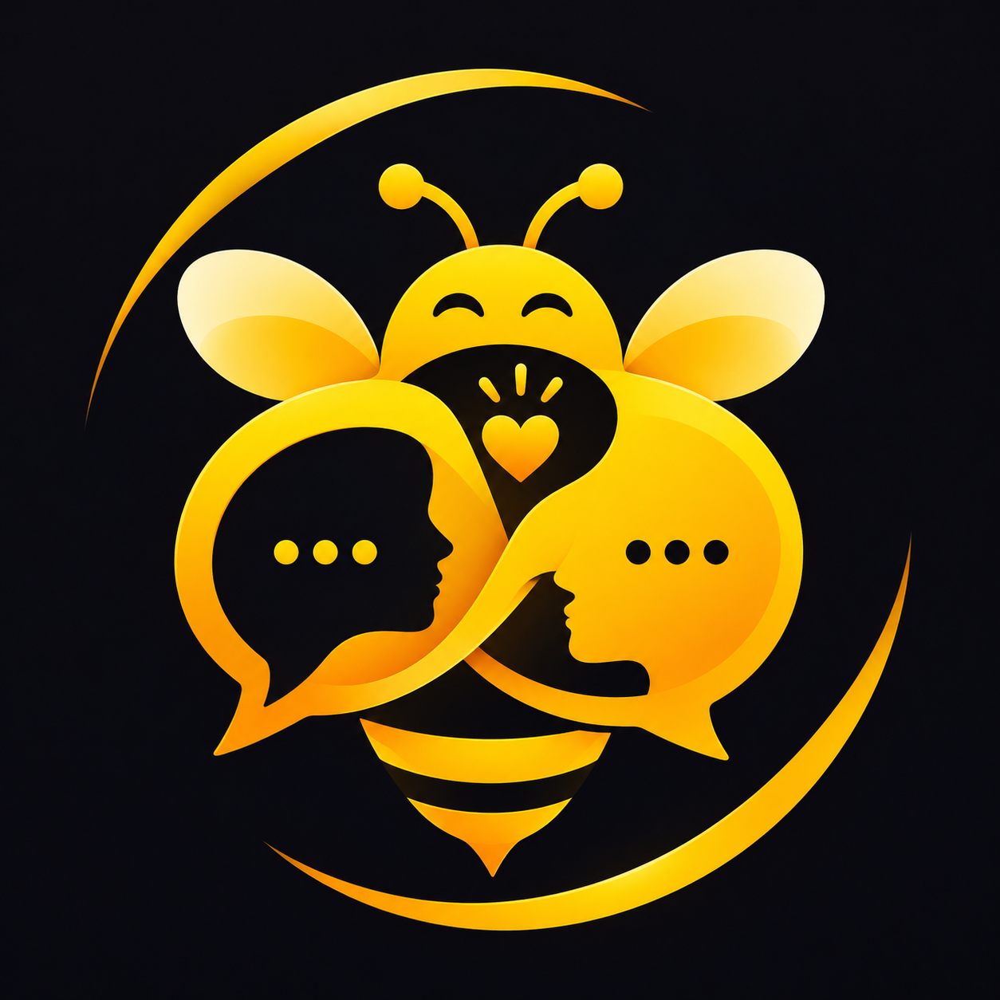

01 ✳
Make it yours
Choose a title, add a note, and shape the questions. Start with suggestions, then edit, remove, or add your own.
THE CREATOR SETS THE SCENE
DetsbeeA little curiosity can bring people closer. Detsbee makes room for honest answers, thoughtful surprises, and the choice to share only what feels right.
One invitation. Two gentle rounds. A chance to see each other from a new angle — with boundaries built into every answer.
Choose a title, add a note, and shape the questions. Start with suggestions, then edit, remove, or add your own.
THE CREATOR SETS THE SCENEShare a one-time invitation link with someone you care about. They can join in without making an account.
ONE INVITE, ONE RESPONSEThey answer in their own words, across “About Me” and “How I See You.” No right answers, no pressure.
HONESTY AT YOUR OWN PACEFor every response, choose to share it, keep it private, skip it, or decline to answer. Only shared answers reach the creator.
YOU HOLD THE HIVE KEYEvery prompt gives the person answering a choice. The creator sees only responses marked Shared. Private, skipped, and declined answers stay out of their results.
Explore Detsbee ↗Prompts are conversation starters, not a test. Make them your own before you send an invitation.
Examples for inspiration only. Detsbee’s prompts can be edited or replaced by the creator.
Detsbee is a social discovery game — not therapy, diagnosis, compatibility scoring, or psychological profiling. Shared Ground looks for matching answers after basic text cleanup; it doesn’t interpret meaning or personality. Questions are curated in the app, not generated by AI.
No. They can open the invitation, read the consent notice, and answer without creating a Detsbee account.
Each link is for one completed response. After someone submits, the creator can rotate the link to invite someone else.
It finds matching “About Me” answers from different respondents after normalizing capitalization, punctuation, and extra spaces. It does not compare similar meanings.
Recipients get a private receipt and can use it to request deletion of their submission.
Bring a question. Leave the pressure behind.
Visit the Detsbee app ↗